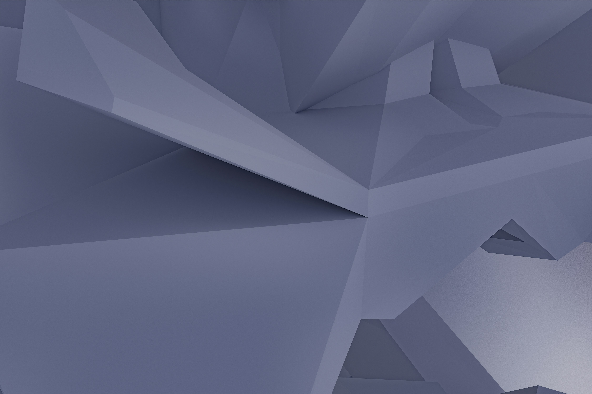
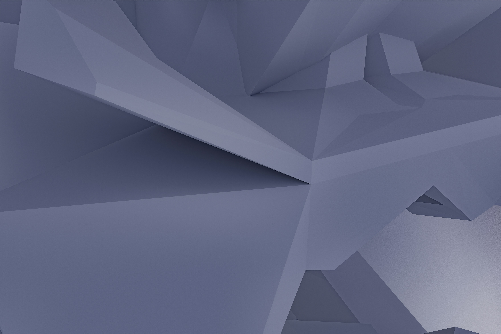

1. अनुसंधान नैतिकता का महत्व
अनुसंधान नैतिकता का उद्देश्य यह सुनिश्चित करना है कि वैज्ञानिक
कार्य मानवता, पर्यावरण और समाज के लिए लाभकारी हो। नैतिकता अनुसंधान
की प्रक्रिया को पारदर्शी, निष्पक्ष और जिम्मेदार बनाती है। इसके
अंतर्गत डेटा का दुरुपयोग रोकने, प्रतिभागियों के अधिकारों की रक्षा
करने और परिणामों की निष्पक्षता बनाए रखने के प्रयास किए जाते हैं।
2. अनुसंधान में पारदर्शिता
अनुसंधान प्रक्रिया को पारदर्शी बनाने के लिए यह आवश्यक है कि
शोधकर्ता अपने कार्य की स्पष्ट जानकारी दें। इसमें निम्नलिखित शामिल
हैं:
- डेटा संग्रहण के तरीकों का स्पष्ट विवरण।
- प्रयोगशाला विधियों का विस्तृत दस्तावेज।
- परिणामों की रिपोर्टिंग में सटीकता और निष्पक्षता।
- स्रोतों और सह-शोधकर्ताओं का उचित श्रेय।
3. प्रतिभागियों की गोपनीयता
अनुसंधान के दौरान प्रतिभागियों की गोपनीयता बनाए रखना अत्यंत
महत्वपूर्ण है। शोधकर्ता को यह सुनिश्चित करना चाहिए कि:
- प्रतिभागियों की व्यक्तिगत जानकारी सुरक्षित हो।
- डेटा का उपयोग केवल अनुसंधान उद्देश्यों के लिए हो।
- प्रतिभागियों की सहमति से ही डेटा एकत्र किया जाए।
- गोपनीयता उल्लंघन के खिलाफ सुरक्षा उपाय लागू हों।
4. नैतिक अनुमोदन
अनुसंधान की शुरुआत से पहले नैतिक अनुमोदन प्राप्त करना अनिवार्य है।
नैतिक समिति यह सुनिश्चित करती है कि अनुसंधान समाज के लिए लाभकारी
हो और नैतिक मानकों का पालन करता हो। नैतिक अनुमोदन के लिए
निम्नलिखित आवश्यक हैं:
- अनुसंधान का उद्देश्य और इसकी संभावित सामाजिक प्रभाव।
- अनुसंधान प्रक्रिया और विधियों का विवरण।
- प्रतिभागियों के साथ किए जाने वाले संवाद का विवरण।
- गोपनीयता और सुरक्षा उपायों का विवरण।
5. शोधकर्ताओं की जिम्मेदारियां
प्रत्येक शोधकर्ता की जिम्मेदारी है कि वे अनुसंधान नैतिकता का पालन
करें। इसमें निम्नलिखित शामिल हैं:
- ईमानदारी और निष्पक्षता के साथ अनुसंधान करना।
-
सह-शोधकर्ताओं और टीम के सदस्यों के साथ सम्मानपूर्वक व्यवहार
करना।
- परिणामों की गलत व्याख्या से बचना।
- अनुसंधान को मानवता और पर्यावरण के लिए लाभकारी बनाना।
6. परिणामों की रिपोर्टिंग
अनुसंधान के परिणामों को निष्पक्षता और सटीकता के साथ प्रस्तुत करना
चाहिए। इसमें निम्नलिखित बिंदुओं का ध्यान रखना आवश्यक है:
- डेटा के साथ छेड़छाड़ न करें।
-
अनुसंधान सीमाओं और त्रुटियों को स्पष्ट रूप से स्वीकार करें।
-
परिणामों को इस प्रकार प्रस्तुत करें कि वे अन्य शोधकर्ताओं द्वारा
पुन: सत्यापित किए जा सकें।
7. पर्यावरणीय जिम्मेदारी
अनुसंधान प्रक्रिया में पर्यावरणीय प्रभावों का ध्यान रखना अनिवार्य
है। इसमें शामिल हैं:
- प्राकृतिक संसाधनों का सतत उपयोग।
- प्रदूषण और अपशिष्ट को न्यूनतम करना।
- पर्यावरण-संबंधी अनुसंधान को प्राथमिकता देना।
8. नवाचार और नैतिकता
नवाचार करते समय नैतिकता को ध्यान में रखना आवश्यक है। यह सुनिश्चित
करता है कि तकनीकी प्रगति का उपयोग मानवता के लाभ के लिए किया जाए।
9. वित्तीय पारदर्शिता
अनुसंधान के वित्तीय स्रोतों और उनके उपयोग को पारदर्शी बनाए रखना
चाहिए।
10. वैश्विक अनुसंधान नैतिकता
अंतरराष्ट्रीय सहयोग के दौरान नैतिक मानकों का पालन करना सुनिश्चित
करें। विभिन्न सांस्कृतिक मूल्यों और सामाजिक प्रभावों का सम्मान
करना आवश्यक है।


 
